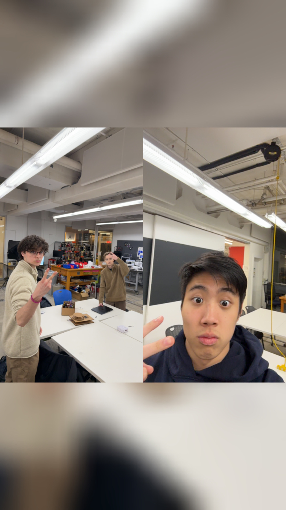
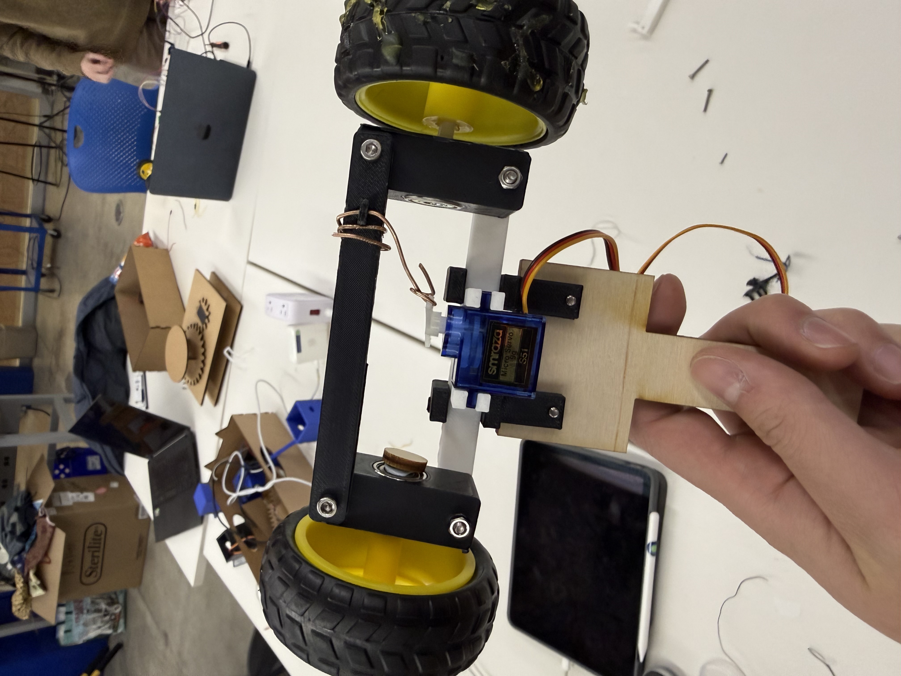
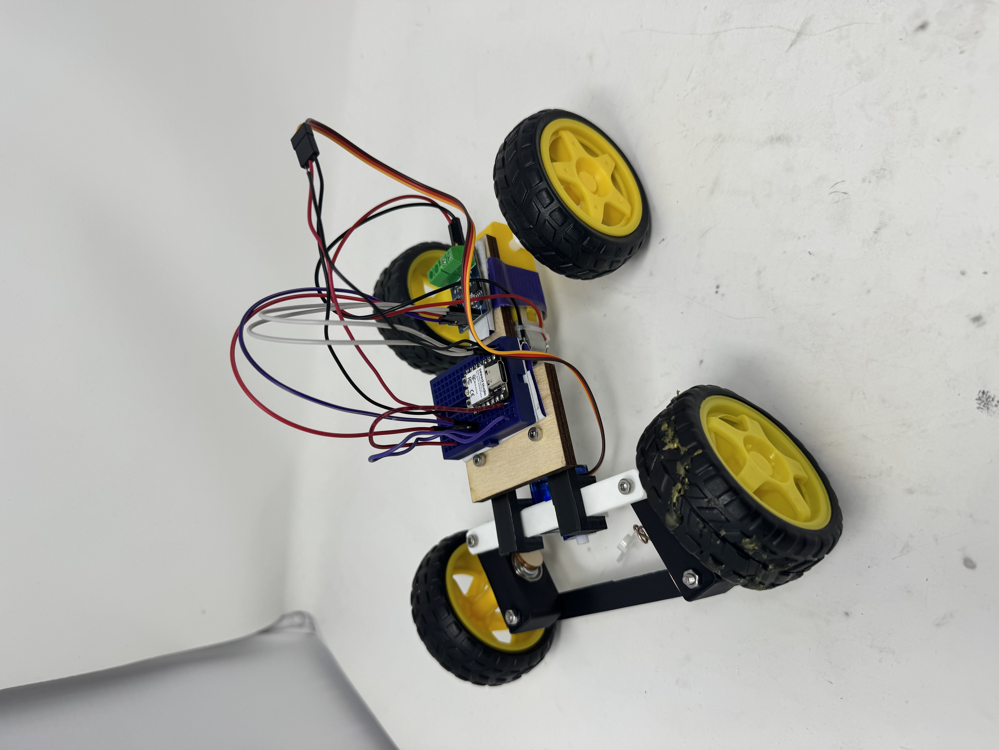

<div class="textcontainer">
<p class="margin"> </p>
<h3>Week 9: Radio, WiFi, Bluetooth (IoT)</h3>
This week I had the absolute pleasure of working with Jacob Gokongwei and Daniel Spadafora.
We decided to make an RC car.
Jacob and I worked on the physical components and Daniel did the arduino radio code.
Here is us hard at work
<p></p>
</div>
<div>
We made it so a servo controlled the turning. The car is rear-wheel drive
<p></p>
</div>
<div>
This is the finalized car
<p></p>
<video width="320" height="240" controls>
<source src="movement.mov" type="video/mp4">
Car moving
</video>
</div>
<p class="margin"> </p>
<div class="flexrow">
<a id="btn" href="wk9.zip" download>Download my files from this week!
</a>
</div>
<p class="margin"> </p>
<h4>Assignment: [Program something with IOT]</h4>
</div>